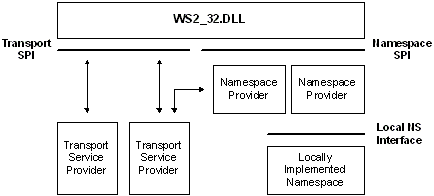

A namespace refers to some capability to associate (as a minimum) the protocol and addressing attributes of a network service with one or more friendly names. Many namespaces are currently in wide use, including the Internet's Domain Name System (DNS), Active Directory Domain Services, the bindery, NetWare Directory Services (NDS) from Novell, and X.500. These namespaces vary widely in how they are organized and implemented. Some of their properties are particularly important to understand from the perspective of Winsock name resolution.
There are three different types of namespaces in which a service can be registered:
Dynamic namespaces allow services to register with the namespace on the fly, and for clients to discover the available services at run-time. Dynamic namespaces frequently rely on broadcasts to indicate the continued availability of a network service. Older examples of dynamic namespaces include the Service Advertising Protocol (SAP) namespace used within a NetWare environment and the Name Binding Protocol (NBP) namespace used by AppleTalk. The Peer Name Resolution Protocol (PNRP) namespace used on Windows is a more recent example of a dynamic namespace.
Static namespaces require all of the services to be registered ahead of time, that is, when the namespace is created. An example of a static namespace are the hosts, protocol, and services files used by most TCP/IP implementations. On Windows, these files are typically located in the C:\windows\system32\drivers\etc folder.
Persistent namespaces allow services to register with the namespace on the fly. Unlike dynamic namespaces however, persistent namespaces retain the registration information in nonvolatile storage where it remains until such time as the service requests that it be removed. Persistent namespaces are typified by directory services such as X.500 and the NDS (NetWare Directory Service). These environments allow the adding, deleting, and modification of service properties. In addition, the service object representing the service within the directory service could have a variety of attributes associated with the service. The most important attribute for client applications is the service's addressing information. DNS is another example of a persistent namespace. Although there is a programmatic way to resolve DNS names using Windows Sockets, the DNS namespace provider in Windows does not support registering new DNS names using Winsock. You must use the DNS functions directly to register DNS names. For more information, see the DNS Reference.
Many namespaces are arranged hierarchically. Some, such as X.500 and NDS, allow unlimited nesting. Others allow services to be combined into a single level of hierarchy or group. This is typically referred to as a workgroup. When constructing a query, it is often necessary to establish a context point within a namespace hierarchy from which the search will begin.
Naturally, the programmatic interfaces used to query the various types of namespaces and to register information within a namespace (if supported) differ widely. A namespace provider is a locally-resident piece of software that knows how to map between the Winsock namespace SPI and some existing namespace (which could be implemented locally or be accessed through the network). Namespace provider architecture is illustrated as follows:

Note that it is possible for a given namespace, say DNS, to have more than one namespace provider installed on a given computer.
As mentioned above, the generic term service refers to the server-half of a client/server application. In Winsock, a service is associated with a service class, and each instance of a particular service has a service name which must be unique within the service class. Examples of service classes include FTP Server, SQL Server, XYZ Corp. Employee Info Server, etc. As the example attempts to illustrate, some service classes are well known while others are unique and specific to a particular vertical application. In either case, every service class is represented by both a class name and a class identifier. The class name does not necessarily need to be unique, but the class identifier must be. Globally Unique Identifiers (GUIDs) are used to represent service class identifiers. For well-known services, class names and class identifiers (GUIDs) have been preallocated, and macros are available to convert between, for example, TCP port numbers (in host-byte order) and the corresponding class identifier GUIDs. For other services, the developer chooses the class name and uses the Uuidgen.exe utility to generate a GUID for the class identifier.
The notion of a service class exists to allow a set of attributes to be established that are held in common by all instances of a particular service. This set of attributes is provided at the time the service class is defined to Winsock, and is referred to as the service class schema information. When a service is installed and made available on a host computer, that service is considered instantiated, and its service name is used to distinguish a particular instance of the service from other instances which may be known to the namespace.
Note that the installation of a service class only needs to occur on computers where the service executes, not on all of the clients which may utilize the service. Where possible, the Ws2_32.dll provides service class schema information to a namespace provider at the time an instantiation of a service is to be registered or a service query is initiated. The Ws2_32.dll does not, of course, store this information itself, but attempts to retrieve it from a namespace provider that has indicated its ability to supply this data. Since there is no guarantee that the Ws2_32.dll can supply the service class schema, namespace providers that need this information must have a fallback mechanism to obtain it through namespace-specific means.
As noted above, the Internet has adopted what can be termed a host-centric service model. Applications needing to locate the transport address of a service generally must first resolve the address of a specific host known to host the service. To this address they add in the well-known port number and thus create a complete transport address. To facilitate the resolution of host names, a special service class identifier has been preallocated (SVCID_HOSTNAME). A query that specifies SVCID_HOSTNAME as the service class and specifies a host name for the service instance name will return host address information if the query is successful.
In Windows Sockets 2, applications that are protocol-independent should avoid the need to comprehend the internal details of a transport address. Thus, the need to first get a host address and then add in the port is problematic. To avoid this, queries may also include the well-known name of a particular service and the protocol over which the service operates, such as FTP over TCP. In this case, a successful query returns a complete transport address for the specified service on the indicated host, and the application is not required to inspect the internals of a sockaddr structure.
The Internet's Domain Name System does not have a well-defined means to store service class schema information. As a result, DNS namespace providers for Winsock can only accommodate well-known TCP/IP services for which a service class GUID has been preallocated.
In practice, this is not a serious limitation since service class GUIDs have been preallocated for the entire set of TCP and UDP ports, and macros are available to retrieve the GUID associated with any TCP or UDP port with the port expressed in host-byte order. Thus, all of the familiar services such as HTTP, FTP, Telnet, Whois, etc. are well supported.
Continuing with our service class example, instance names of the FTP service may be "alder.intel.com" or "ftp.microsoft.com" while an instance of the XYZ Corp. Employee Info Server might be named "XYZ Corp. Employee Info Server Version 3.5".
In the first two cases, the combination of the service class GUID for FTP and the computer name (supplied as the service instance name) uniquely identify the desired service. In the third case, the host name where the service resides can be discovered at service query time, so the service instance name does not need to include a host name.
Name Resolution Data Structures
Protocol-Independent Name Resolution
Registration and Name Resolution
Summary of Name Resolution Functions
Â
Â